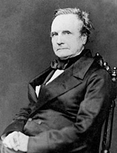

为计算机的诞生做出过杰出的贡献
电子计算机是人类智慧的结晶，是科学发展的必然产物，但是没有天才的头脑和坚毅的精神就不会有今天蓬勃发展的计算机产业，让我们永远纪念那些为科技进步献身的人们。

查尔斯·巴贝奇
(Charles Babbage 1792- 1871)
想出了计算机的雏形
阿达·洛普雷斯
(Ada Lovelace 1815-1852)
计算机之母
阿兰·图灵
(Alan Turing 1912-1954)
计算机科学之父、人工智能之父
约翰·冯·诺依曼
(John Von Nouma，1903-1957)
计算机之父